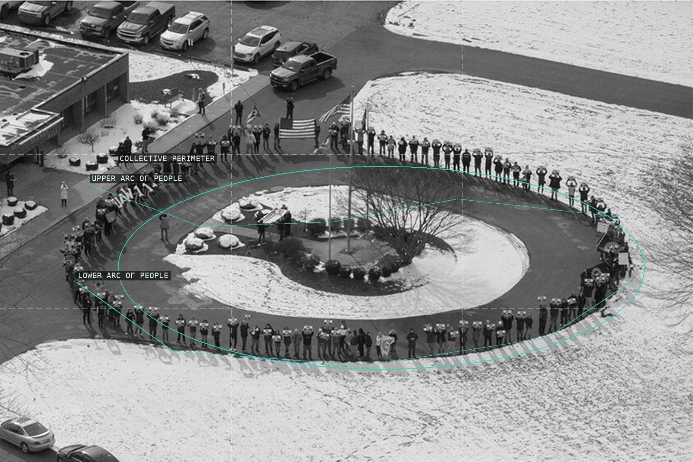
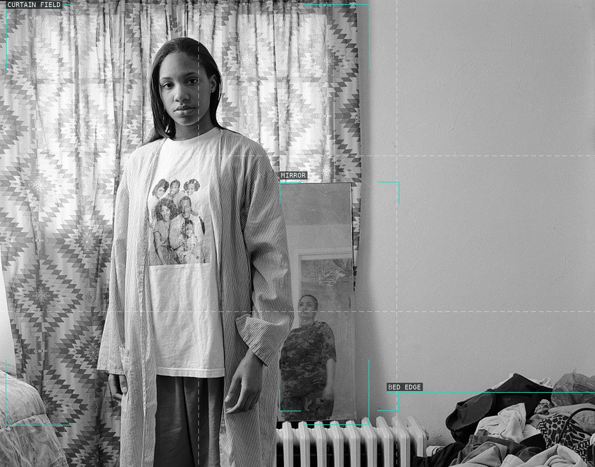
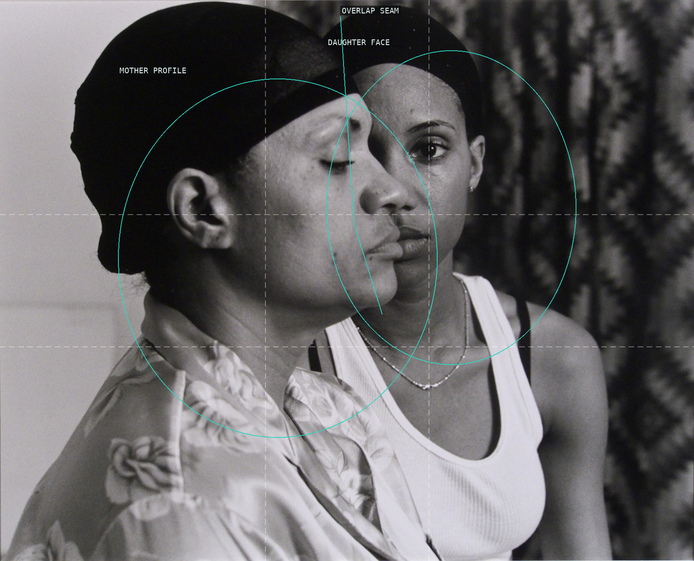
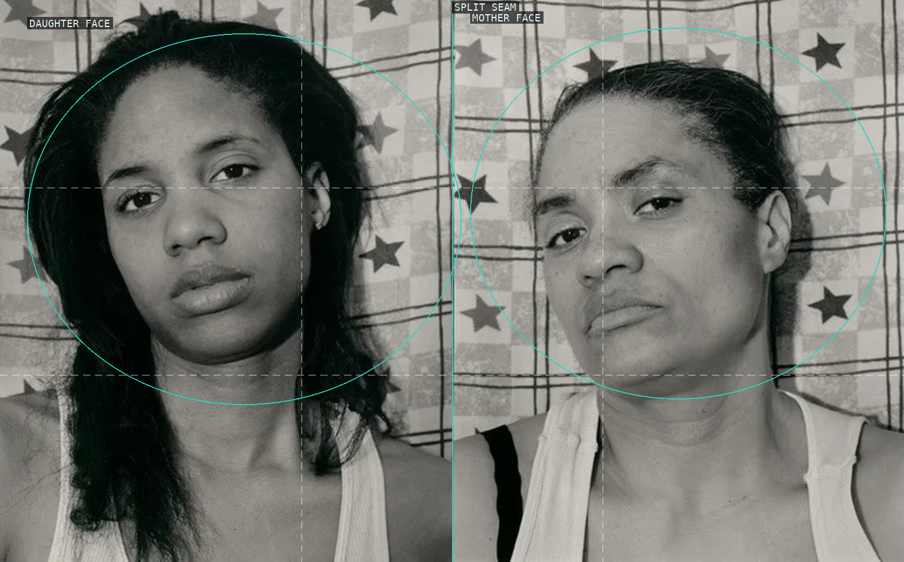
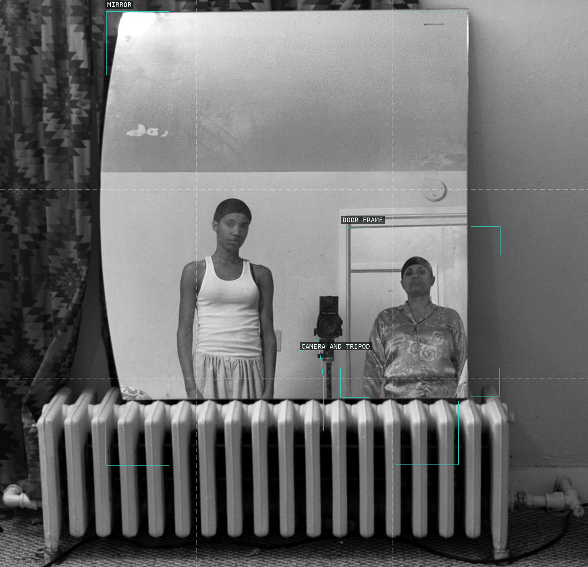
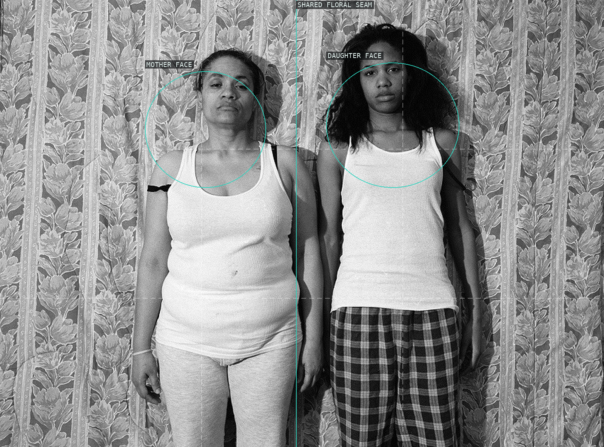

LaToya Ruby Frazier — overlay proofs

01. The Last Cruze, 2019

02. Huxtables, Mom, and Me, 2008

03. Momme, 2008

04. Mom and Me, 2008

05. Mom Making an Image of Me, 2008

07. Momme Portrait Series (Floral Comforter), 2008